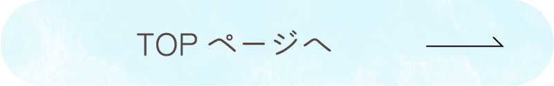
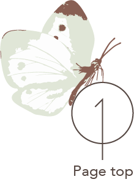

<!DOCTYPE html>
<html lang="ja">

<head>
    <meta charset="UTF-8">
    <meta name="viewport" content="width=device-width, initial-scale=1.0">
    <title>Soraseed Design Labo</title>
    <link rel="icon" href="../images/soraseed_favicon.ico">
    <!-- リセットCSS -->
    <link rel="stylesheet" href="../css/reset.css">
    <!-- css -->
    <link rel="stylesheet" href="./style.css">
    <!-- jQuery JS -->
    <script src="https://ajax.googleapis.com/ajax/libs/jquery/3.7.1/jquery.min.js"></script>
    <!-- Webフォント -->
    <script>
        (function (d) {
            var config = {
                kitId: 'tao1ywr',
                scriptTimeout: 3000,
                async: true
            },
                h = d.documentElement, t = setTimeout(function () { h.className = h.className.replace(/\bwf-loading\b/g, "") + " wf-inactive"; }, config.scriptTimeout), tk = d.createElement("script"), f = false, s = d.getElementsByTagName("script")[0], a; h.className += " wf-loading"; tk.src = 'https://use.typekit.net/' + config.kitId + '.js'; tk.async = true; tk.onload = tk.onreadystatechange = function () { a = this.readyState; if (f || a && a != "complete" && a != "loaded") return; f = true; clearTimeout(t); try { Typekit.load(config) } catch (e) { } }; s.parentNode.insertBefore(tk, s)
        })(document);
    </script>
</head>

<body>
    <div class="footer_fixed">
        <!-- ヘッダー -->
        <header classs="header">
            <div class="header_wrap" id="header">
                <h1 class="header_logo">
                    
                    
                </h1>
                <div class="openbtn">
                    <span></span>
                </div>
                <nav class="global_nav">
                    <ul>
                        <li><a href="../index.html">Home</a></li>
                        <li><a href="../ABOUT/index.html">About</a></li>
                        <li><a href="../WORKS/index.html">Works</a></li>
                        <li><a href="../CONTACT/index.html">Contact</a></li>
                        <li>
                            <ul class="SNS_btn">
                                <li><a href="https://x.com/Soraseed_wd"></a>
                                </li>
                                <li><a href="https://www.instagram.com/soraseed_wd/"></a></li>
                            </ul>
                        </li>
                    </ul>
                </nav>
            </div>
        </header>


        <section class="thanks_page">
            <h3>THANK YOU</h3>
            <div class="CONTACT_lead thanks_lead">
                <p>お問い合わせありがとうございます。<br>
                    内容を確認後、2営業日以内に返信いたします。<br>
                    <br>
                    万が一連絡のない場合は、大変お手数ではございますが、<br>
                    再度お問い合わせいただくか、SNSアカウントまでご連絡いただければ幸いです。
                </p>
            </div>
            <!-- TOPページボタン -->
            <div class="thanks_foot">
                <div class="TOP_btn">
                    <a href="../index.html"></a>
                </div>

            </div>
        </section>

        <!-- フッター -->
        <footer class="footer">
            <div class="plant_image">
                
            </div>
            <div class="thanks_flower">
                
            </div>
            <picture>
                <source srcset="../images/sp_FOOTER_soil@2x.png" media="(max-width:767px)">
                
            </picture>
            <div class="copy">
                <p>&copy;Soraseed Design Labo All rights reserved.</p>
            </div>
        </footer>

        <!-- ページトップアイコン -->
        <a class="page_top" href="#top">
            </a>
    </div>
    <!-- JavaScript -->
    <script>
        // -- ヘッター --
        $(function () {
            // メニュー
            $('.openbtn').on('click', function () {
                $('.openbtn').toggleClass('open');
                $('.global_nav').fadeToggle();
                // メニュー展開時はスクロールをロック
                $("body").toggleClass("no_scroll");
            })
            // メニュー展開時にロゴの色を変える
            $('.openbtn').on('click', function () {
                $('.white_logo').fadeToggle();
            })
            // グローバルナビクリック時にメニューを閉じる
            $('.global_nav_link').on('click', function () {
                // $('openbtn').removeClass('open')
                $('.openbtn').toggleClass('open');
                $('.global_nav').fadeToggle();
                $("body").toggleClass("no_scroll");
            })
            // -- フッターのイベント --
            const plantImage = document.querySelector(".footer_bud");

            plantImage.addEventListener("click", function () {
                if (!plantImage.classList.contains("tree")) {
                    // 芽から木に変える
                    plantImage.classList.add("tree");
                    plantImage.alt = "木";
                } else {
                    // 木の状態でクリックされた場合、隠しページへ
                    window.location.href = "../SECRET/index.html";
                }
            });
            // -- ページトップアイコンの色変更 --
            window.addEventListener('scroll', function () {
                const pageTop = document.querySelector('.page_top');
                const pagetop02 = document.querySelector('.pagetop02');
                const pagetop01 = document.querySelector('.pagetop01');
                const footer = document.querySelector('.footer_soil');

                // フッターの上端を計算
                const footerRect = footer.getBoundingClientRect();
                const footerTop = footerRect.top;
                // ページトップアイコンの下端を計算
                const pageTopRect = pageTop.getBoundingClientRect();
                const pageTopBottom = pageTopRect.bottom;

                // アイコン切り替えの条件
                if (pageTopBottom > footerTop) {
                    pagetop02.classList.remove('active');
                    pagetop01.classList.add('active');
                } else {
                    pagetop01.classList.remove('active');
                    pagetop02.classList.add('active');
                }
            });
        })

    </script>
</body>

</html>